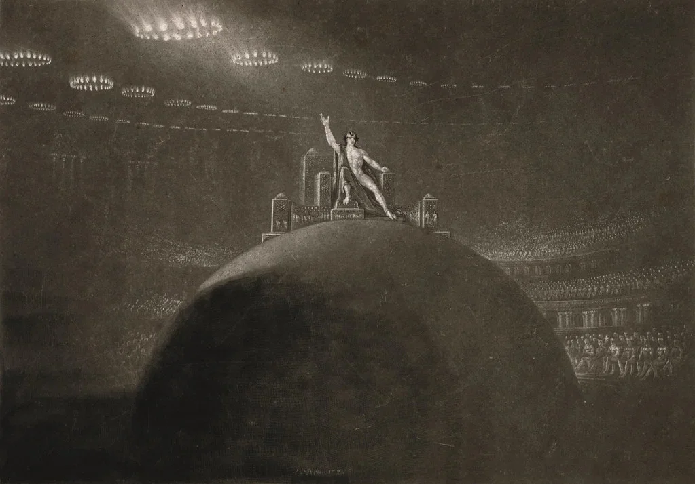
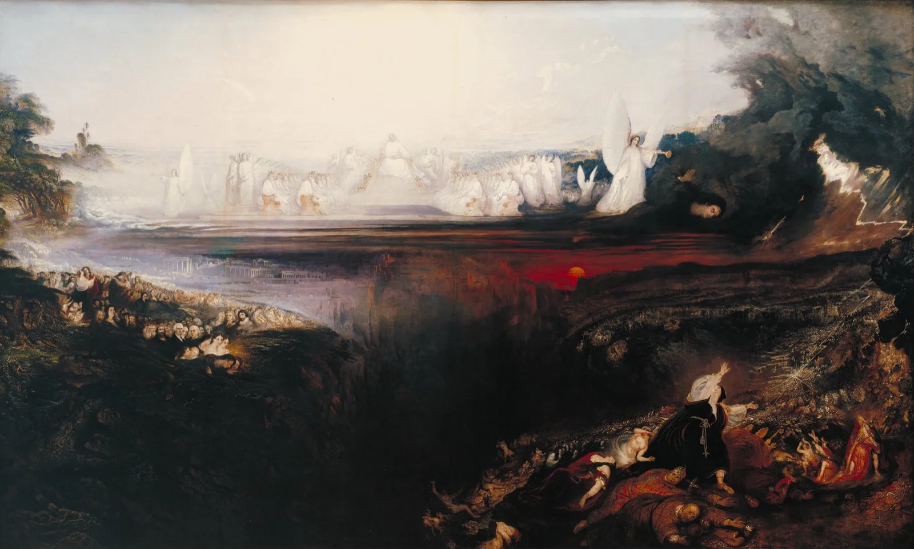

In 1825, a self-taught painter from Northumberland sat down to ruin a copper plate on purpose.
That's what mezzotint requires. You start with destruction. A steel rocker, toothed like a comb, gets dragged across the surface in every direction until the whole plate is roughened into a field of tiny burrs. If you inked it now and pressed it to paper, you'd get nothing but black. Pure, velvety, unbroken black. The image comes from working backwards, from darkness toward light, scraping and burnishing the copper smooth wherever you want a highlight to appear. It is the only printmaking technique that begins in total shadow.
John Martin understood that shadow better than anyone alive.
Darkness on copper
Martin had already made his name with enormous oil paintings of biblical catastrophe. Belshazzar's Feast. The Fall of Babylon. The Seventh Plague. Each canvas was a theatre of ruin: tiny human figures dwarfed by impossible architecture, lit by some furious light source that seemed to burn from inside the painting itself. London crowds lined up to see them. The Times called him the most popular painter in England. Turner reportedly hated him.
But the mezzotints were something else. Between 1825 and 1827, Martin produced a series of twenty-four prints illustrating Milton's Paradise Lost. The commission came from Septimus Prowett, a publisher who saw a market for deluxe illustrated editions. Martin took the job and then exceeded it. He didn't just illustrate the poem. He rebuilt it in copper and ink.

The technique suited his instincts perfectly. Mezzotint's tonal range runs from absolute black to brilliant white with no outlines, no hatching, no crosswork of lines. Just gradation. Martin used that range to create spaces of staggering depth. His Pandemonium stretches back into a darkness that feels genuinely infinite. Satan stands at the front, half-lit, muscular, enormous. Behind him, columns rise into a vault so high it disappears. The architecture recalls nothing biblical. It looks industrial. It looks like a railway terminus designed by a fallen angel.
The prints sold extraordinarily well. Prowett issued them in monthly parts, each containing two plates with accompanying text, priced for the middle-class collector. Subscribers could frame them or bind them into volumes. Either way, Satan ended up on parlour walls across England. The figure that Milton had made complex and sympathetic, Martin now made visually irresistible.
The merit of his pictures is space, and his defect is likewise space.
Charles Lamb on John Martin
Critics noticed. Not all of them approved. Charles Lamb thought Martin's work was all spectacle and no feeling. The art establishment in London had never fully accepted him; the Royal Academy kept its distance. His paintings were too popular, too theatrical, too willing to please the crowd. The mezzotints only deepened the suspicion. Here was a man selling images of damnation at a profit, and the public couldn't get enough.
The complaint had teeth. Martin's Satan is gorgeous. That's the problem, or the point, depending on your sympathies. The figure radiates authority. He broods on a mountaintop above a lake of fire and the scene feels not horrifying but grand. Terrible and grand. The word the Romantics used was sublime, and they meant something specific by it: an experience of awe so vast it approaches terror but never quite arrives. Edmund Burke had defined it in 1757. Martin, seventy years later, was printing it on paper and shipping it to drawing rooms.
The beautiful catastrophe
Whether this was dangerous occupied more than a few reviewers. If Satan looks magnificent, does the image endorse rebellion? Milton himself had faced the same accusation. Blake famously declared that Milton was "of the Devil's party without knowing it." Martin's prints forced the question into a visual register. You could read the poem and argue about its theology for years. But you couldn't look at Martin's Satan, backlit and colossal against the abyss, and pretend the image was a warning. It was an invitation. Come, look at the beautiful catastrophe.

Martin never resolved the tension, and maybe resolution was never the point. His later work pushed further into apocalyptic spectacle. The three enormous paintings he completed near the end of his life, known as the Judgement triptych, are each more than two metres tall. They toured the country like a travelling show. Admission was charged. Thousands came.
He died in 1854, just months after finishing them. The paintings passed through obscurity for over a century before Tate Britain restored and exhibited them in the 1970s. The mezzotints, meanwhile, never entirely disappeared. They circulated through secondhand bookshops and print auctions, turning up in collections from New York to Melbourne. Every few decades someone rediscovers them and the same conversation starts again: about spectacle and seriousness, about whether beauty can be a kind of moral danger.
The copper plates themselves are gone. Mezzotint is brutal on its materials. The delicate burr that holds the ink wears down with each impression. After a few hundred pulls, the darks start to fade. The velvet goes thin. Eventually the plate gives up nothing but grey.
What remains are the prints. Thousands of them, scattered across the world. Satan still stands in his hall of columns, still commands his ruined parliament, still looks out from the darkness with a grandeur that criticism has never quite managed to diminish. Martin built him to last. The copper didn't. The image did.